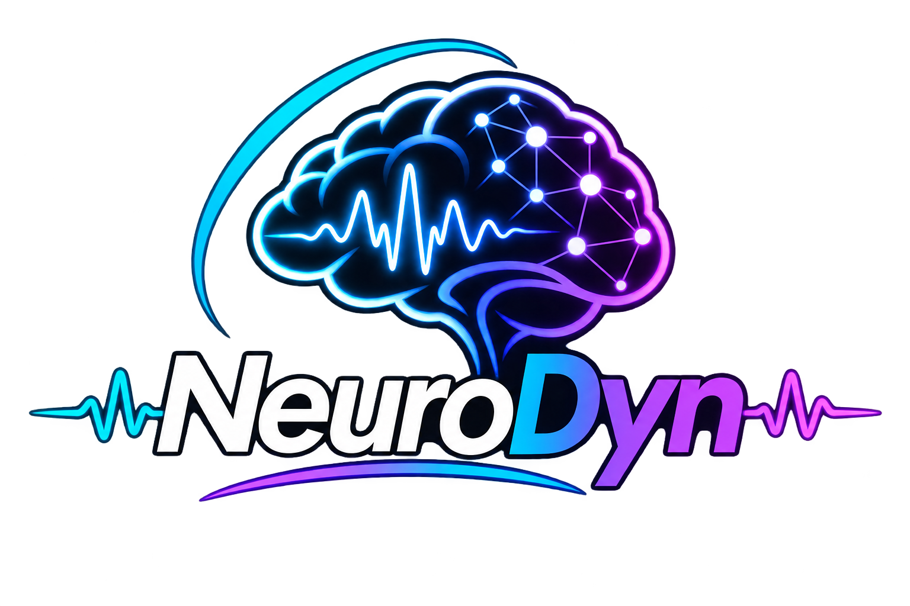

UNIVERSIDADE FEDERAL DO MARANHÃO
Programa de Pós-Graduação em Engenharia Elétrica
Doutorado em Engenharia Elétrica
Automação e Controle · Processamento da Informação Biológica

NeuroDyn
Identificação de Assinaturas Neurofisiológicas Transdiagnósticas por Meio de Estatísticas de Ordem Superior e Modelagem Dinâmica de Sinais EEG Pediátricos
Registros, atividades e avanços do desenvolvimento da pesquisa.
← Voltar ao GanttClique em uma data destacada para consultar o registro, as decisões, as hipóteses e as referências.
Sobre os registros e critérios científicos
Até 17/11: revisão da literatura, avaliação de bases e amadurecimento da proposta de doutorado. 18/11: criação do NeuroDyn e consolidação da fundamentação. A partir de 19/11: etapa de metodologia matemática, conforme a trajetória científica do projeto; validação, aplicação e defesa são marcos posteriores. Os registros retrospectivos não são transcrições literais de diários escritos na própria data.
Esta página é pública. Resultados científicos detalhados, dados sensíveis e anotações internas devem permanecer no repositório privado do NeuroDyn.